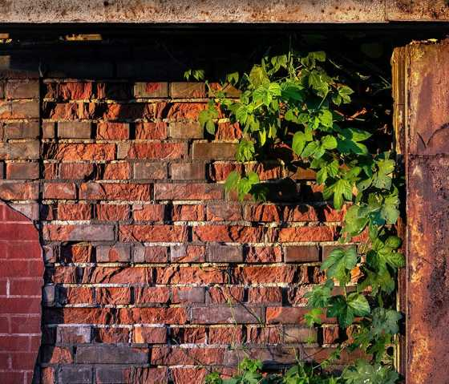
なかがわ
住宅街で、ごはんとコーヒーのひと休み。
お店について
千葉県銚子市小畑町、君ケ浜駅の近くの住宅街にあるカフェです。紹介記事では「隠れ家的なお店」「店主さんの対応が気さく」と書かれています。
食べログの投稿などからは、しょうが焼きのプレート、カレー、アイスコーヒーなどが提供されていることがうかがえます(内容は変わることがあります)。
確認できた情報の出典: 食べログ、ホクトライフ(いずれも第三者の掲載情報)。店名の由来やオーナーの想いは確認できなかったため、掲載していません。このページの言い回し(「ごはんとコーヒーのひと休み」等)は制作側のイメージです。
掲載写真はフリー素材のイメージであり、お店の実際の様子・料理ではありません。他地域で撮影されたものや撮影地が不明なものを含みます。

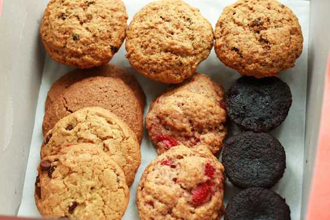
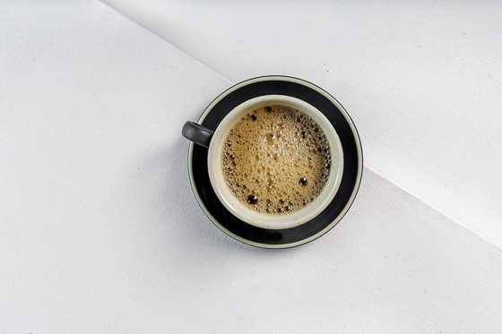
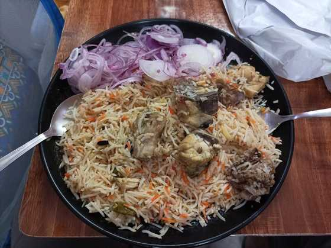

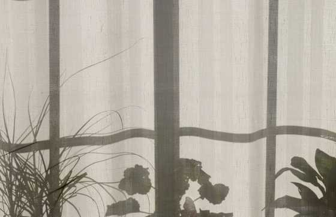
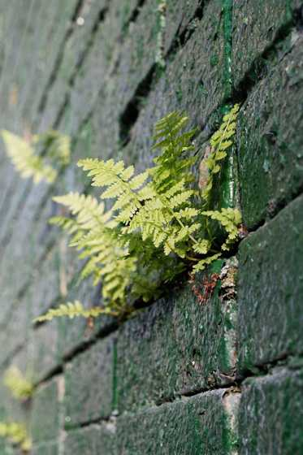
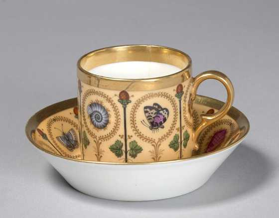

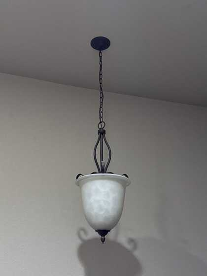
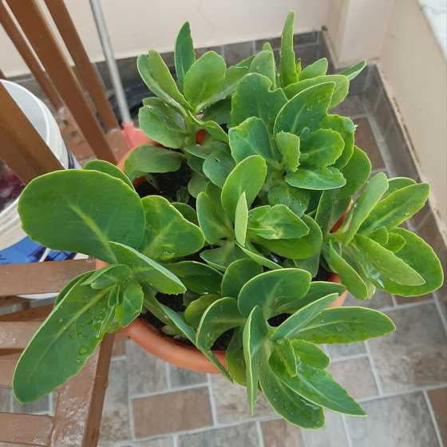
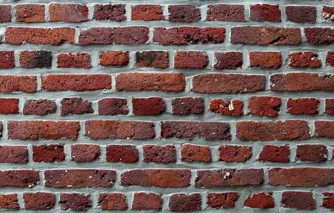
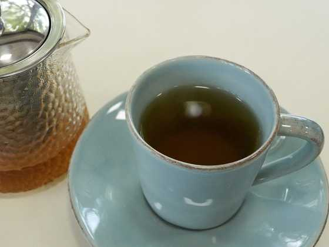
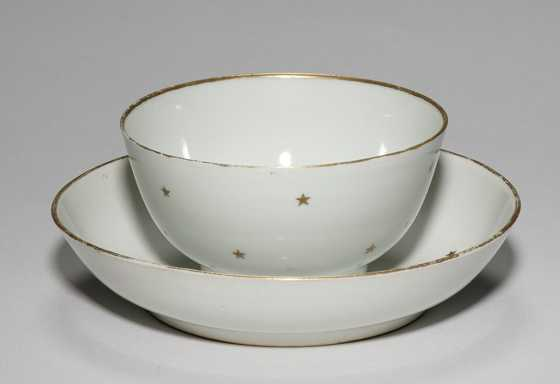
写真は縮小・切り抜きなどの加工をしています。上記の各写真のクレジットは写真ごとに表示しています。
口コミ(イメージ例)
イメージ例
住宅街の中にあって、ふらっと入りやすい雰囲気でした。ごはんもしっかりあって、昼にちょうどよかったです。
創作のイメージ例です。実際のお客様の声ではありません。
イメージ例
お昼にプレートをいただきました。食後のコーヒーまでゆっくりできて、ひと息つけました。
創作のイメージ例です。実際のお客様の声ではありません。
イメージ例
店主さんが気さくで、居心地のよい空間です。また近くに来たら寄りたいです。
創作のイメージ例です。実際のお客様の声ではありません。